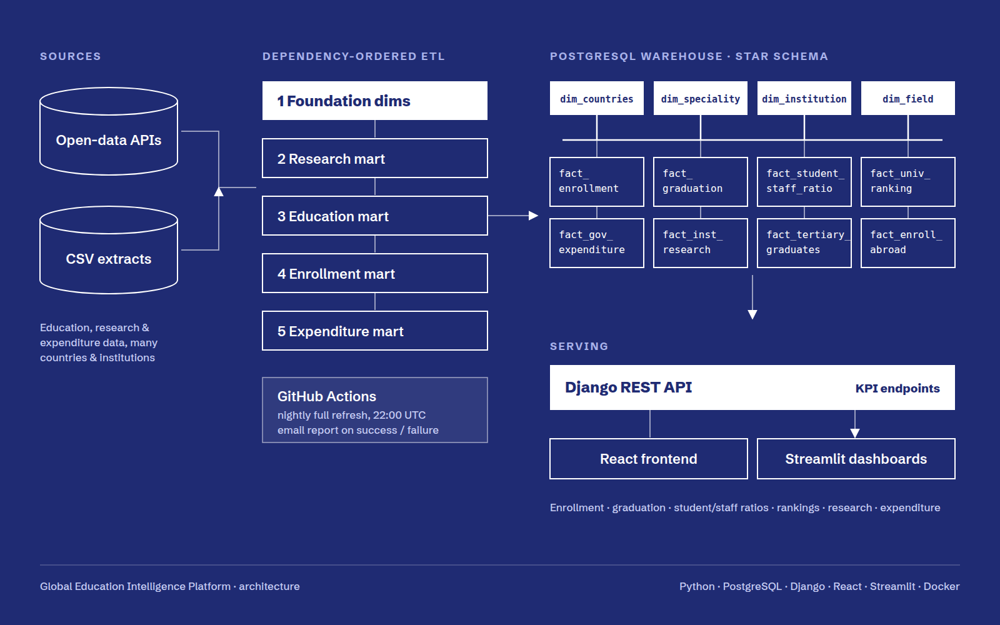

Global Education Intelligence Platform
ETL, star-schema warehouse, BI

What it does
Consolidates education, research, and public-spending data from many countries into one PostgreSQL star-schema warehouse. Five dependency-ordered ETL stages load shared dimensions first, then the research, education, enrollment, and expenditure marts.
How it runs
A nightly GitHub Actions job rebuilds the warehouse and emails a run report. A Django REST API serves KPIs (graduation rates, student/staff ratios, university rankings, spending) to a React frontend and Streamlit dashboards.
Python, PostgreSQL, Django, React, TypeScript, Streamlit, Docker, GitHub Actions